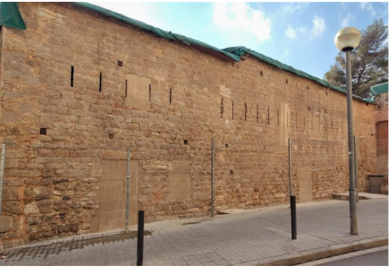

ULTIMAS NOTICIAS
Finalizan los trabajos de consolidación y restauración del muro norte del Castell de Bellvís de L’Hospitalet
Tras años de lucha vecinal, la rehabilitación del Castell de Bellvís de L’Hospitalet de Llobregat, en el barrio de la Torrassa, ha empezado a ser una realidad con la finalización de los trabajos de consolidación, restauración y arreglo
del muro norte del edificio, como paso previo a los proyectos de intervención arqueológica y arquitectónica.
Desde el Ayuntamiento de L’Hospitalet explican que los primeros trabajos han tenido una duración de dos meses y han seguido el criterio de mínima intervención y máximo respeto.
Así, la intervención en el muro norte ha consistido básicamente en la limpieza y consolidación de los paramentos con el objetivo específico de poner al descubierto, para su apreciación, las diferentes partes históricas y los elementos
constructivos especiales que presenta esta construcción.
La actuación ha sido realizada por una prestigiosa empresa especializada en la conservación del patrimonio, Gamarra & García -de la que son responsables María José García Mulero, licenciada en Historia Antigua y Arqueología, y Agustín
Gamarra, licenciado en Bellas Artes y especialista en restauración-, que cuenta entre sus intervenciones con el mantenimiento del conjunto arqueológico del siglo XVIII del centro del Born, la consolidación de elementos ornamentales
de la Sala Hipóstila del Park Güell y varios trabajos en los emplazamientos romanos de Badalona y Tona.
Según los responsables de los trabajos, “no se trata de ocultar las alteraciones que a lo largo de la historia ha experimentado la estructura original, como podría ser la apertura de puertas y ventanas o los agujeros de vigas de posteriores
remodelaciones, sino dignificar estas 'heridas' para que no estorben la visualización de los diferentes aparatos históricos que conserva y luce esta fachada patrimonial”. “Ahora se ha puesto en valor el castillo medieval y se puede
ver el aspecto que tenía en los siglos XIII y XIV”, añaden.

Tres proyectos de rehabilitación
El Ayuntamiento de L'Hospitalet ha encargado tres proyectos para la rehabilitación del Castell de Bellvís y su adecuación como Centro de Interpretación de la Época Medieval en la ciudad. La propuesta de intervención también incluye recuperar
el espacio que rodea la fortificación como mirador de la ciudad y rememorar así su antigua función de torre de vigilancia, desde donde se controlaban los campos que ocupaban la montaña, la Via Augusta y el delta del Llobregat.
Paralelamente a las obras de restauración del muro norte que han finalizado ahora, se está realizando un trabajo de investigación de la línea de propiedad del edificio para valorar en rigor la definición histórica de los paramentos. También
se está trabajando en el proyecto de intervención arqueológica que incluirá las estructuras arquitectónicas y la excavación en extensión del solar y del subsuelo, como base documental teórica y gráfica para llevar a cabo la posterior
actuación con el proyecto de restauración arquitectónica del edificio. La previsión es que la intervención arqueológica comience a finales de 2022 y la restauración arquitectónica a finales de 2023.